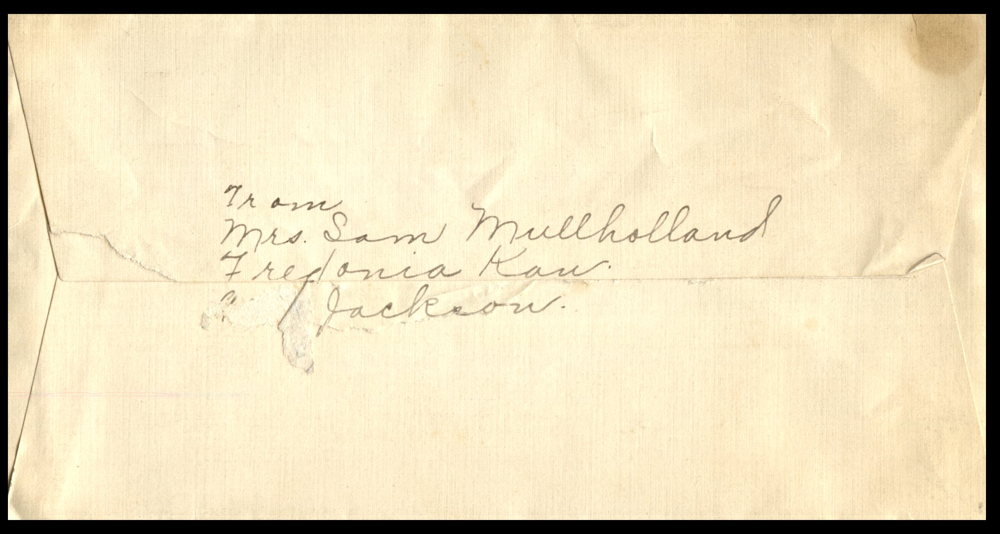
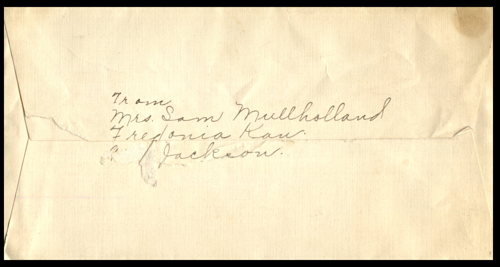

From: Ruby Chandler Mullholland, To: Jeanette Knox Chandler
{kind=link}
{kind=link}


 

{kind=link}
From: Ruby Chandler Mullholland, To: Jeanette Knox Chandler Mailed From: Fredonia, Kansas on November 21, 1927
Mailing Address: Mrs. E.H. Chandler Pearl, Illinois
Return Address: Mrs. Sam Mullholland Fredonia, Kansas 937 Jackson
Fredonia. Monday. Dearest Mama, Mart, and Lu I guess that includes all that are left at home now. Quite a bunch of us got away all at once. There was another wreck on the C&A so we were detoured into Kansas City via Mo. Pac. you know we only had an hour between trains, so of course we missed our Santa Fe. Sam went to the office at Union Station to get our tickets routed over another R.R. as there was no other Santa Fe so we finally got transferred to the Mo. Pac. to Fredonia. Changing trains once we got here at 10:50 Saturday night. It was easy to spend the time in K.C. We checked our stuff went up town for breakfast, window shopped, and after dinner we went to the new lovers midland theatre and got out in time to get our train at 4:30. It had been snowing out this way. Wonder if you had anywhere. It was so pleasant in K.C. we were sure surprised to step out into snow where we changed trains. The first person we ran into at Kansas City was Beverly Davis and his girl was with him. He was just out of the hospital and getting a train to Wichita. Had been in K.C a month. Had his knee operated and thinks he won't have to use a crutch. He looked terrible but after expert care maybe he'll improve. He said Marvel and D.D. had been there a little while. I had a letter from Inez saying she'd be over for a few days. She thought I'd be home last week so I don't know whether Thanksgiving will interfere with her coming or not. Mrs. Skagg, the landlady, is just able to be up. Her trouble seems to be gall stones. The Dr. told her to be operated, but she says she doesn't intend to. The club is to meet with me tomorrow. It is on the program that way or I'd not have it for I didn't even intend going but the president said she'd have to phone everyone and I'd have to get someone to exchange with me, so I told her to go ahead and let them come. All I have to do is to have my house clean. Several neighbors came in yesterday to express sympathy. One of them brought me in a hot mince pie for dinner. I sure was needing it too as I didn't get anything and we didn't want to go out for dinner. Some of you write soon. I hope Mama feel pretty week. I don't feel I am any help to you Mama so far away but wish I could help you decide what to do. But you probably can do that better far yourself -and after a little time goes by. This is all for now. You write to Martin. Lots of Love, Ruby